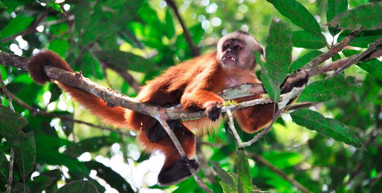
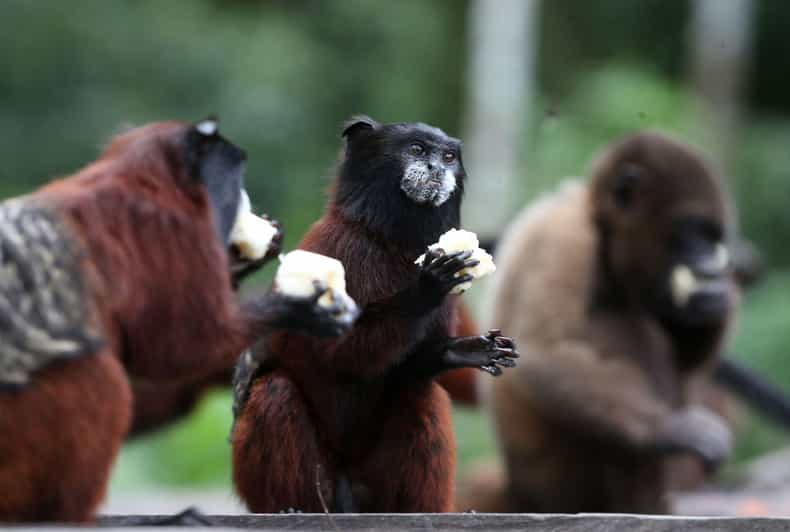
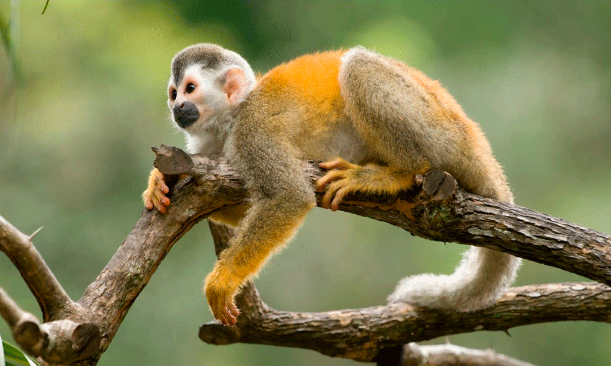

Islas de los Monos Choro: Un refugio natural en la Amazonía peruana
Las Islas de los Monos Choro son un fascinante santuario de vida silvestre ubicado en la región de Madre de Dios, Perú. Este destino es famoso por albergar diversas especies de monos, entre ellos el mono choro, y ofrece a los visitantes la oportunidad de observar a estos primates en su hábitat natural.
Historia
Estas islas se formaron a lo largo de los años debido a la dinámica del río Madre de Dios y han servido como un ecosistema protegido para diversas especies de monos. Gracias a los esfuerzos de conservación, el área se ha convertido en un destino clave para el ecoturismo y la investigación científica sobre primates.



Horarios y Ubicación
- Ubicación: Río Madre de Dios, región de Madre de Dios, Perú.
- Horarios de visita: Generalmente en la mañana y la tarde.
- Costo de entrada: Depende de la agencia de turismo y el paquete seleccionado.
Consejos para Visitantes
- Contrata un guía: Un guía especializado te ayudará a identificar y aprender sobre las especies de monos.
- Respeta la fauna: No alimentes a los monos ni los perturbes con ruidos fuertes.
- Lleva repelente de insectos: La selva tiene una gran cantidad de mosquitos.
- Usa ropa adecuada: Opta por ropa ligera y de manga larga para mayor comodidad.
- Disfruta de la experiencia: Observa con paciencia y disfruta de la vida silvestre en su entorno natural.